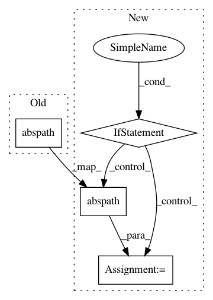

4280cb121364e5a6d3f15df26c6113dfeae58dd7,gluoncv/auto/estimators/base_estimator.py,BaseEstimator,__init__,#BaseEstimator#Any#Any#Any#Any#,68
Before Change
// logdir
logdir = config.pop("logdir", None) if isinstance(config, dict) else None
self._logdir = os.path.abspath(logdir) if logdir else os.getcwd()
// finalize config
cfg = self._default_cfg.merge(config) // config can be dict or yaml file
After Change
// logdir
logdir = config.pop("log_dir", None) if isinstance(config, dict) else None
if logdir:
self._logdir = os.path.abspath(logdir)
else:
self._logdir = os.path.join(os.getcwd(), name.lower() + datetime.now().strftime("-%m-%d-%Y"))
// finalize config
cfg = self._default_cfg.merge(config) // config can be dict or yaml file
diffs = self._default_cfg.diff(cfg)
if diffs:
self._logger.info("modified configs(<old> != <new>): {")
In pattern: SUPERPATTERN
Frequency: 4
Non-data size: 4
Instances
Project Name: dmlc/gluon-cv
Commit Name: 4280cb121364e5a6d3f15df26c6113dfeae58dd7
Time: 2021-02-17
Author: cheungchih@gmail.com
File Name: gluoncv/auto/estimators/base_estimator.py
Class Name: BaseEstimator
Method Name: __init__
Project Name: tryolabs/luminoth
Commit Name: 142334f3e098496b511170d9b6494e3c60b7c280
Time: 2017-10-25
Author: javirey@gmail.com
File Name: luminoth/utils/checkpoint_downloader.py
Class Name:
Method Name: get_checkpoint_path
Project Name: IDSIA/sacred
Commit Name: f5604614490c998cedf75366400f1741381d7580
Time: 2015-08-27
Author: qwlouse@gmail.com
File Name: sacred/dependencies.py
Class Name:
Method Name: create_source_or_dep
Project Name: pyinstaller/pyinstaller
Commit Name: f3a93bdbfa5d716c15394492dffce3748661dd88
Time: 2017-08-10
Author: andcycle-github.com@andcycle.idv.tw
File Name: PyInstaller/loader/pyiboot01_bootstrap.py
Class Name:
Method Name: